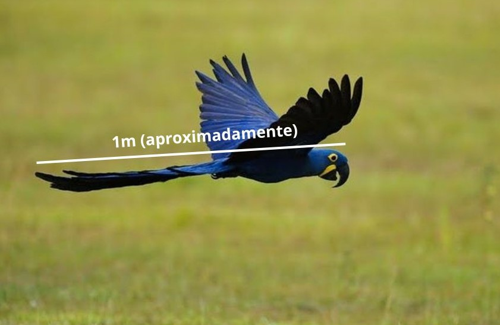

Arara Azul
| Nome Científico | Reino | Filo |
|---|---|---|
| Anodorhynchus Hyacinthinus | Animalia | Chordata |
| Classe | Ordem | Família |
|---|---|---|
| Ave | Psittaciformes | Psittacidae |
Altura
Chega a atingir mais de um metro de comprimento do bico até a ponta da cauda.

Habitats
É encontrada em formações savânicas ou florestas no Brasil, Paraguai e Bolívia, as maiores populações são encontradas no Pantanal
Peso
Até 1,3kg, quando filhotes apresentam cerca de 30 gramas e 82mm.
Reprodução
Os ovos são colocados em ninhos em ocos de árvores ou em paredões rochosos. A fêmea bota de um a três ovos e os choca por cerca de um mês. Os filhotes aprendem a voar após três meses, mas se separam dos pais entre 12 e 18 meses.
Alimentação
Alimentam-se de frutos como buriti, bicuri e macaúba.
Curiosidade
Sua incrível longevidade permite que em cativeiro viva até 80 anos e na natureza varia entre 30 e 50 anos.

Os texto inspirados são dos sites
Toda Matéria, Mundo ecologia e Portal Amazônia.